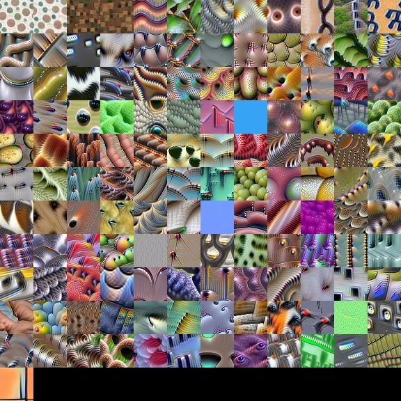

Press SPACE for animation

Neural CA textures. Click the field to damage. Click the Atlas to select a pattern.
Be sure to press the "
benchmark
" button and report the result and device specs to moralex@